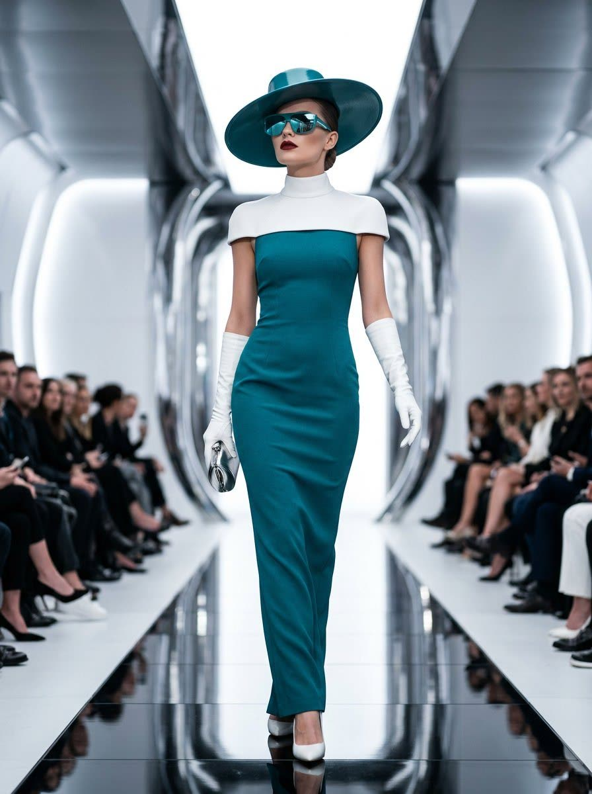

Runway editorial (JSON)
WRD-021WardrobeNano Banana 2by dreamy digital arts (@dreamydigiarts)2026-09-30

Fashion runway/editorial set with studio lighting; structured JSON prompt.
Prompt
{
"scene": {
"location": "fashion runway or high-end editorial set",
"lighting": {
"type": "studio/controlled lighting",
"quality": "bright, evenly diffused",
"effect": "high-key lighting with glossy highlights"
},
"mood": "glamorous, confident, futuristic",
"color_palette": ["teal", "white", "black", "chrome", "deep red lipstick"]
},
"subject": {
"gender": "female",
"age": "20s-30s",
"pose": "walking forward confidently with head slightly tilted up",
"expression": "neutral with bold presence",
"hair": {
"style": "neatly pulled back under the hat"
},
"makeup": {
"lips": "deep red",
"skin": "flawless matte finish",
"eyes": "concealed by mirrored sunglasses"
},
"wardrobe": {
"dress": "form-fitting sleeveless bluel gown",
"accessories": [
"wide-brimmed teal hat",
"mirrored teal sunglasses",
"white high-neck collar",
"white opera gloves"
]
}
},
"camera": {
"lens": "85mm f/1.2",
"settings": {
"aperture": "f/2.0",
"shutter_speed": "1/500s",
"iso": "100"
},
"perspective": "frontal portrait, eye-level"
},
"aesthetic": {
"style": "high fashion editorial",
"influences": ["Vogue", "Dior runway", "sci-fi glamour"],
"post_processing": ["high contrast", "cool color grading", "polished skin retouching"]
}
}Tags: runway, JSON prompt